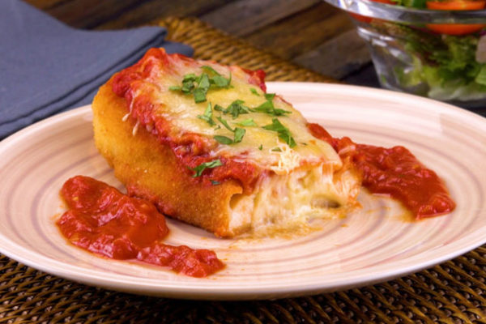

FRANGO A PARMAGENIANA

INGREDIENTES
Principais:
- 1/2 kg de filé de frango
- 1 dente de alho picadinho
- suco de limão, ervas finas e sal a gosto
- óleo para fritar
Empanar:
- 2 ovos batidos com 1 pitada de sal
- 2 xícaras (chá) de farinha de rosca
Molho:
- 1 cebola picadinha
- 2 tomates maduros picadinhos
- 1 caixinha de molho de tomate pronto
- 1/2 xicara (chá) de água
- 3 colheres (sopa) de azeite
- 1 tabletinho de caldo de galinha
- manjericão ou orégano a gosto
Finalizar:
250 g de mussarela em fatias
MODO DE PREPARO
Frango:
- Tempere os filés de frango com o alho, suco de limão, ervas finas e sal a gosto.
- Deixe na geladeira por 30 minutos.
- Após esse tempo, passe nos ovos batidos e na farinha de rosca.
- Frite em óleo não muito quente.
- Retire e deixe descansar sobre papel absorvente.
Molho:
- Bata todos os ingredientes no liquidificador (exceto as raspas de limão) até obter um creme liso e firme.
- Recheie a massa já assada e leve à geladeira por 30 minutos.
Cobertura:
- Doure a cebola no azeite, acrescente os tomates picadinhos, o molho pronto, a água e o caldo de galinha.
- Deixe apurar um pouco, desligue e acrescente o manjericão ou o orégano.
- Coloque os filés em um refratário.
- Regue com o molho e leve ao forno bem quente, somente para derreter a mussarela.
- Retire e sirva.